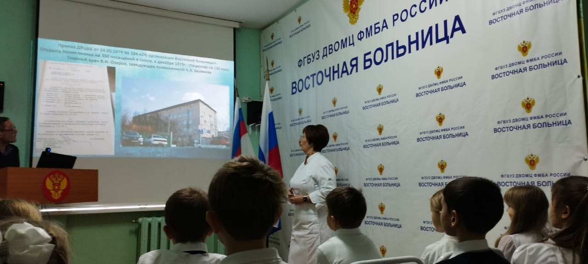
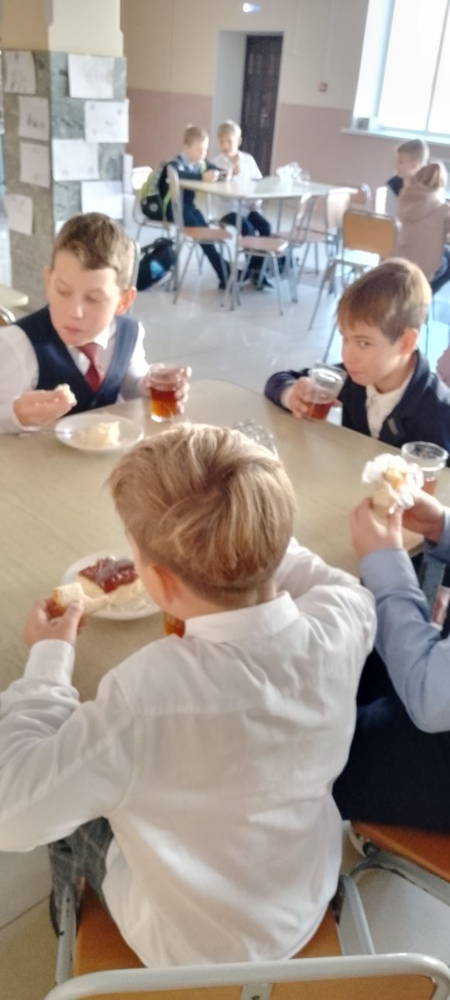

МУНИЦИПАЛЬНОЕ АВТОНОМНОЕ ОБЩЕОБРАЗОВАТЕЛЬНОЕ УЧРЕЖДЕНИЕ
"Средняя общеобразовательная школа #20"
"Средняя общеобразовательная школа #20"
Волонтеры и Совет старшеклассников организовали ребят начальной школы для участия в Акции «Письмо солдату» Старшеклассники провели мастер-класс для ребят по изготовлению конвертов, помогли ребятам составить текст поздравительный, поговорили насколько это важно для солдат, которые ждут любой весточки из дома. Ребят также организовали для проведения мастер-класса по изготовлению оберегов для наших солдат.
Волонтеры 20 школы приняли участие в праздничном концерте для работников больницы п.Восточного. Ученики 2 классов под руководством волонтерской группы с удовольствием поздравили работников больницы с днем их основания. Особенно приятно было выступление для родителей детей, которые учатся в 20 школе
В 20 школе проходит неделя "Здорового питания" Да, здоровое питание очень важно для поддержания нашего здоровья и благополучия. Правильное питание школьника – залог его здоровья, успеваемости и нормального развития. Основные принципы здорового питания включают потребление разнообразной пищи, богатой питательными веществами, такими как фрукты, овощи, цельные зерновые продукты, белки растительного и животного происхождения, а также здоровые жиры. Важно употреблять достаточное количество витаминов, минералов и воды, чтобы поддерживать оптимальное функционирование организма. Более того, ограничение потребления обработанных продуктов, сахара и ненатуральных добавок также способствует поддержанию здорового образа жизни. Ребята младшей школы нарисовали рисунки о полезной и неполезной пищи, были просмотрены мультфильмы о здоровой еде, учащимся на уроках окружающего мира рассказывали о, что надо питаться правильно.